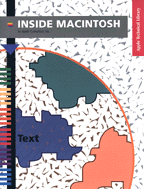

Legacy Document
Important: The information in this document is obsolete and should not be used for new development.
Important: The information in this document is obsolete and should not be used for new development.


Text
Inside Macintosh: Text shows how your application can perform all kinds of text handling, from simple character display to complex, multi-language text processing. This book provides a brief introduction to the unique Macintosh approach to text handling,and shows how you canTo use this book, you should be familiar with QuickDraw, described in Inside Macintosh:Imaging.
- draw characters, strings, and lines of text
- work with fonts in any size, style, and language
- use TextEdit, a simple multi-language text editor
- use utility routines to format numbers, dates, and times
- convert formats among different countries or regions
- design your application to handle text in any language
- provide text input in Asian languages such as Japanese
Availability: Click below to obtain Inside Macintosh: Text in any of the following formats.

Book Contents
- Figures, Tables, and Listings
- Preface - About This Book
- Chapter 1 - Introduction to Text on the Macintosh
- Chapter 2 - TextEdit
- Chapter 3 - QuickDraw Text
- Chapter 4 - Font Manager
- Chapter 5 - Text Utilities
- Chapter 6 - Script Manager
- Chapter 7 - Text Services Manager
- Chapter 8 - Dictionary Manager
- Appendix A - Built-in Script Support
- Appendix B - International Resources
- Appendix C - Keyboard Resources
- Appendix D - Renamed and Relocated Text Routines
- Glossary